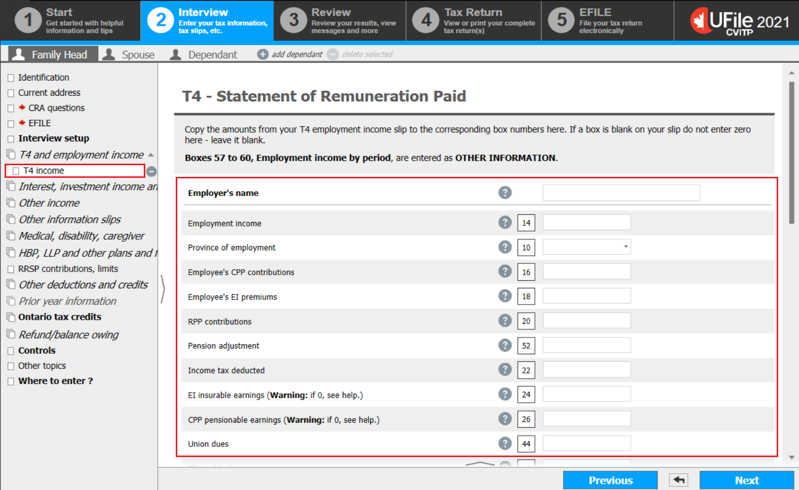
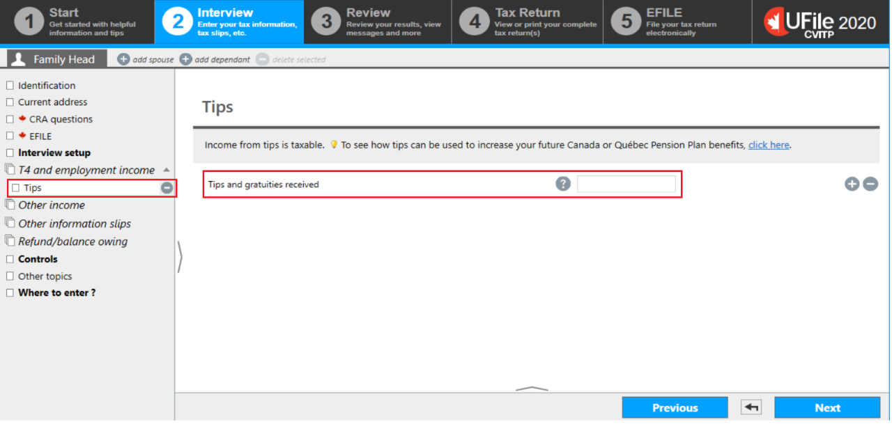
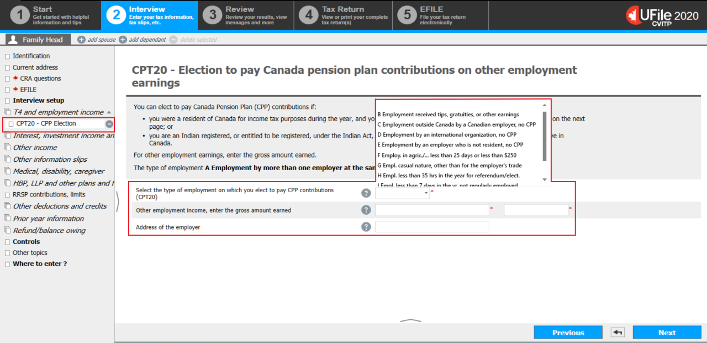
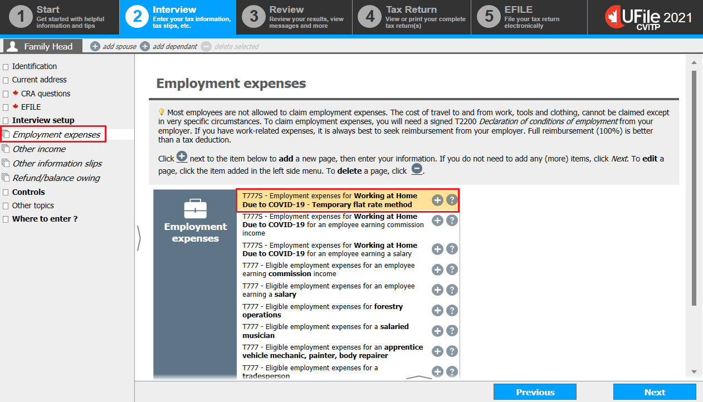

Interview setup

- select Interview setup from the left side menu
Instructions for:
- T4
- T4E
- Tips, gratuities, occasional earnings
- Additional CPP contributions (including additional CPP contributions for tax exempt income)
- from the Employment and other benefits section:
- check the box next to Employment income and employment insurance benefits (T4, T4E/RL-6) and click Next.
- from the Employment and other benefits section:
click next step
Instructions for T5007
- check the box next to Social assistance, workers compensation (T5007/RL-5) and click Next
click next step
Instructions for Work from home due to COVID-19 deduction
- check the box next to Employment expenses (including T777S) and click Next
click next step
T4 and employment income

Instructions for:
- T4 slips
- T4 slips with box 71
- Additional CPP contributions on tax exempt income from a T4 slip
- select T4 and employment income from the left side menu
- click the + sign next to T4 income (earned in any province except Quebec)
click next step
Instructions for T4E
- click the + sign next to T4E – Employment insurance and other benefits
click next step
Instructions for tips, gratuities and occasional earnings
- click the + sign next to Tips
click next step
Instructions for Additional CPP/QPP contributions on tips and gratuities (including tips and gratuities for Status Indian)
- click the + sign next to CPT20 – CPP Elections for Other employment earnings
click next step
T4 - Statement of Remuneration Paid
- enter the Employer’s name
- enter the amounts from the individual’s T4 slip to the corresponding fields on this page
If box 24 and/or box 26 of a T4 slip are blank, do not enter 0 in UFile; leave the fields blank.
Instructions for a Status Indian
- scroll down to field 71 and to make additional CPP contributions on tax exempt income
click next step
T4 box 71 and additional CPP contributions on tax exempt income

- verify box 28 on the T4 slip and make a selection from the drop down menu
- Field 71 is found in the drop down menu in OTHER INFORMATION.
- to make additional CPP contributions on the income from box 71:
- select M Empl. Indian registered under the Indian Act from the drop down menu
- enter the amount on which they wish to make additional CPP contributions
- enter the Address of the employer
- click Next
T4E – Employment insurance and other benefits

- enter the amounts from the T4E into their matching fields in UFile
- if the individual repaid COVID-19 benefits:
- enter the total of the following amounts into the Repayment of an overpayment field:
- EI repayments
- CERB repayment amount the individual wishes to claim for 2022
- enter the CERB repayment amount for 2022 into the field, Repayment of the CERB (this amount is included in box 30)
- enter the total of the following amounts into the Repayment of an overpayment field:
This amount is included in a letter received by the individual from Service Canada, Tips or gratuities
- enter the total for tips and gratuities received during the year that are not included on their T4 slip(s)
- click Next
Election to make additional CPP contributions
- in the drop-down menu for Select the type of employment on which you elect to pay CPP contributions (CPT20), choose B Employment received tips, gratuities, or other earnings
- for Other employment income, enter the gross amount earned, enter the type of income (e.g. Tips) in the first field. In the field next to it, enter the gross amount earned that the individual wants to make additional CPP contributions for
- enter the Address of the employer
- click Next
If the individual has more than one employer to input, return to T4 and employment income in the left side menu and click the + sign next to CPT20 – CPP Election for Other employment earnings to enter an additional employer. Each employer must be added separately.
Workers' compensation benefits, social assistance

- select Social assistance, worker’s compensation from the left side menu
- click the + sign next to T5007- Worker’s compensation benefits, social assistance, etc. (federal lines 14400, 14500, 14600)
click next step
T5007 – Statement of benefits

- enter the amounts from the T5007 in the corresponding fields
- if you entered an amount in field 11, answer the question Did you live with your spouse or common-law partner when you received the social assistance benefits?
- if yes was selected, select the person whose name appears on the slip
Employment expenses
- select Employment expenses from the left side menu
- click the + sign next to T777S – Employment expenses for Working at Home Due to COVID-19 – Temporary flat rate method
click next step
Employment expenses for working at home due to COVID-19

- select Yes to the question Did you work more than 50% of the time from home for a period of at least a month (four consecutive weeks) in 2022 due to COVID-19?
- enter the Total number of days you worked from home in 2022 due to COVID-19